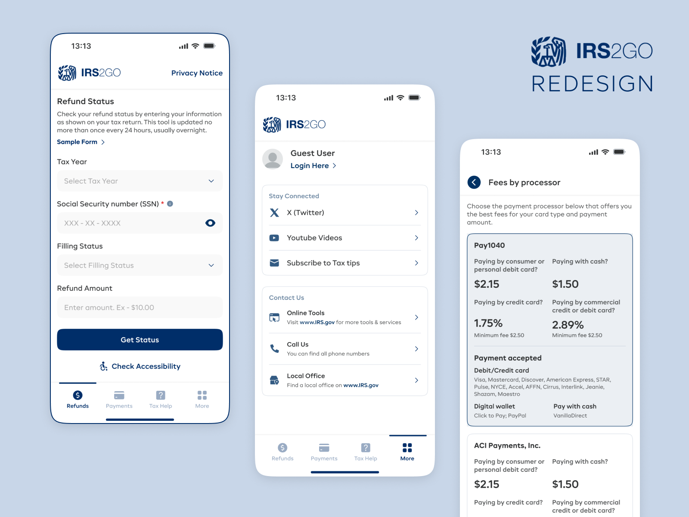

Visual Transformation
A clearer, more predictable, and accessible experience — built with real users in mind.

Transforming a fragmented, redirect-heavy government app into a guided, accessible, and trustworthy dark-mode mobile experience — reducing stress during America’s most stressful season.

IRS2Go looked like an app — but didn’t behave like one. Almost every important action (refund status, payments, tax help) opened an IRS.gov webpage. Users felt disoriented, unsafe, and thrown out of the experience during a stressful task like taxes.
Combined with tiny text, low contrast, poor navigation, and no error prevention, the app offered zero native experience and forced users to navigate the complex IRS website inside a mobile browser shell.
Conversations with seniors, first-time filers, and busy families revealed common themes: confusion, fear of mistakes, distrust of redirections, and overwhelming text.
My redesign was guided by a key insight: IRS2Go wasn’t failing because of UI — it was failing because it wasn’t a real app.
I reimagined the entire product as a fully native tax companion that supports users through stressful financial tasks with clarity, empathy, and predictable flows.
A clearer, more predictable, and accessible experience — built with real users in mind.
Using HCI heuristics and task walkthroughs, the redesign delivered major improvements.